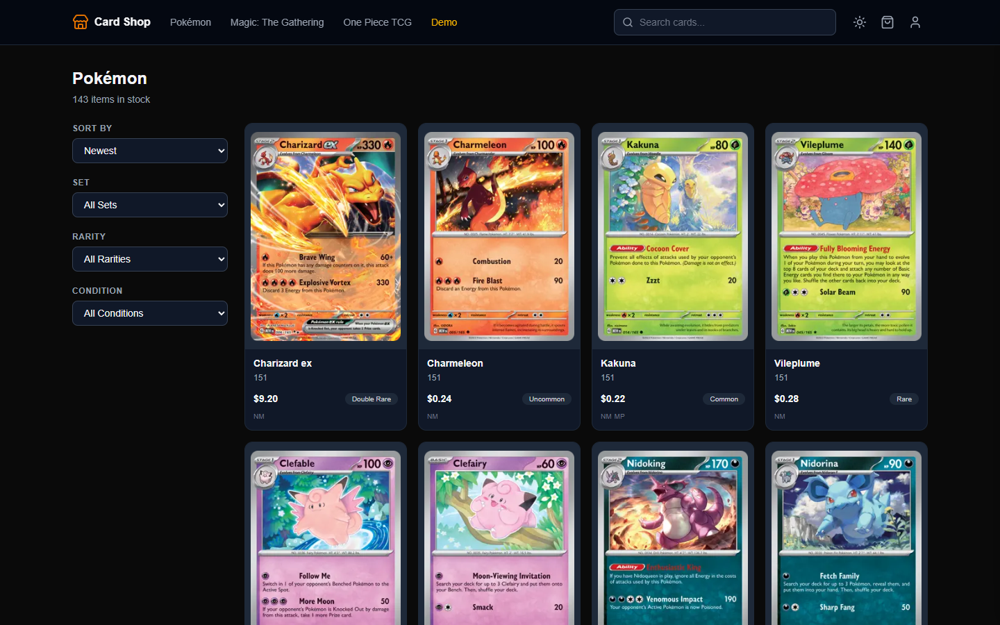
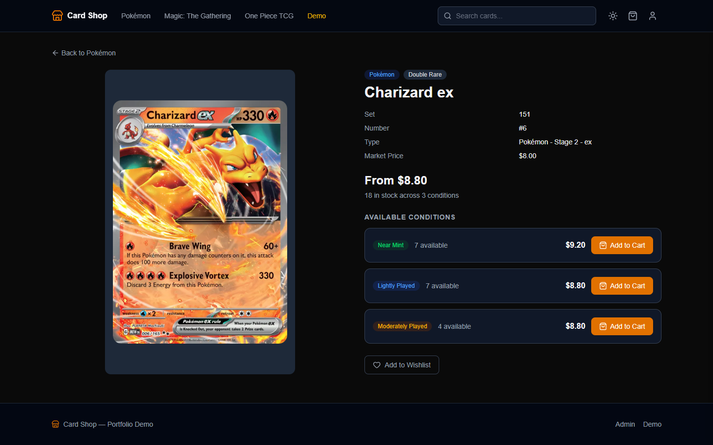
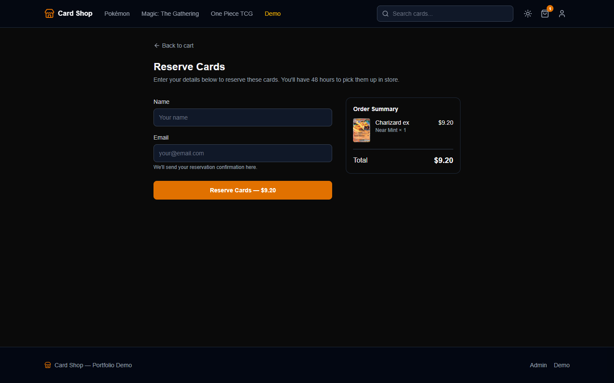
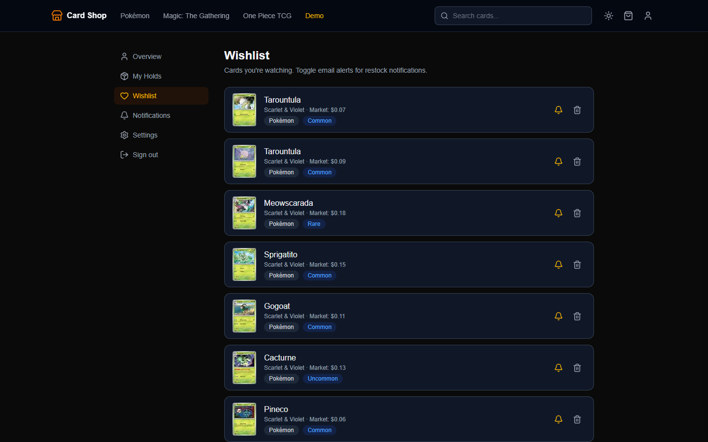
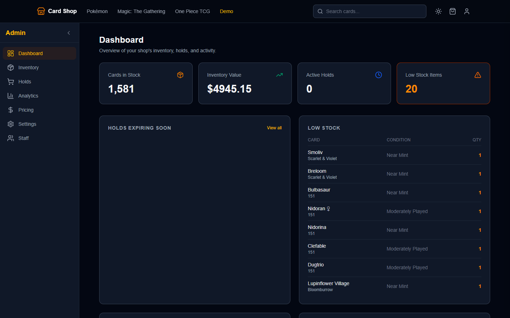
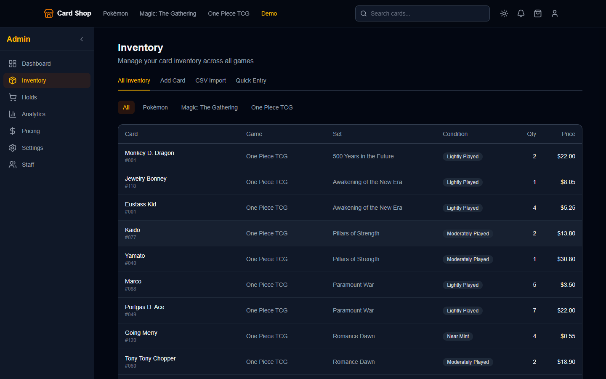
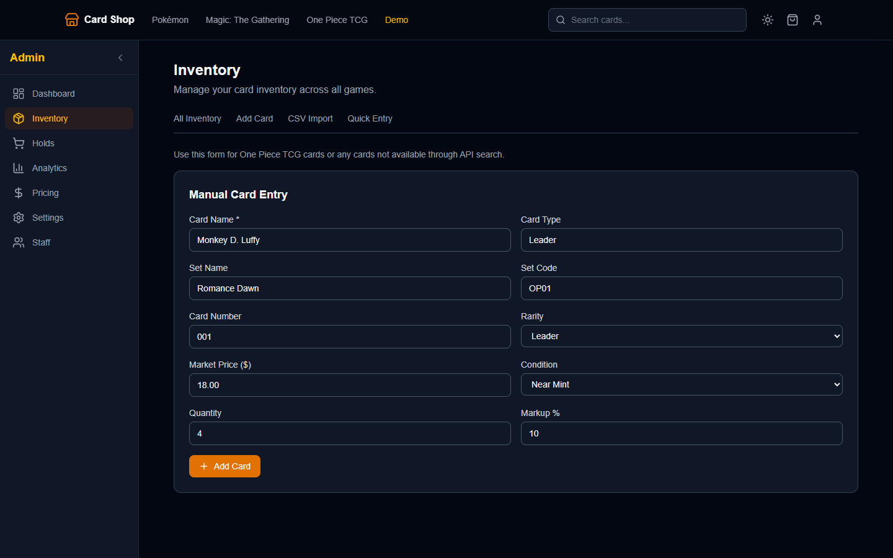
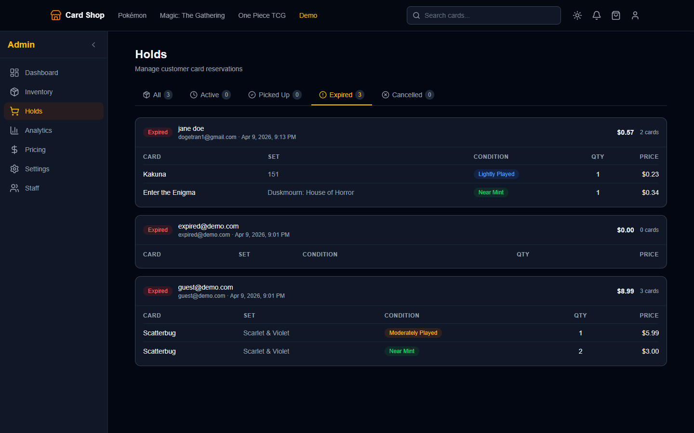
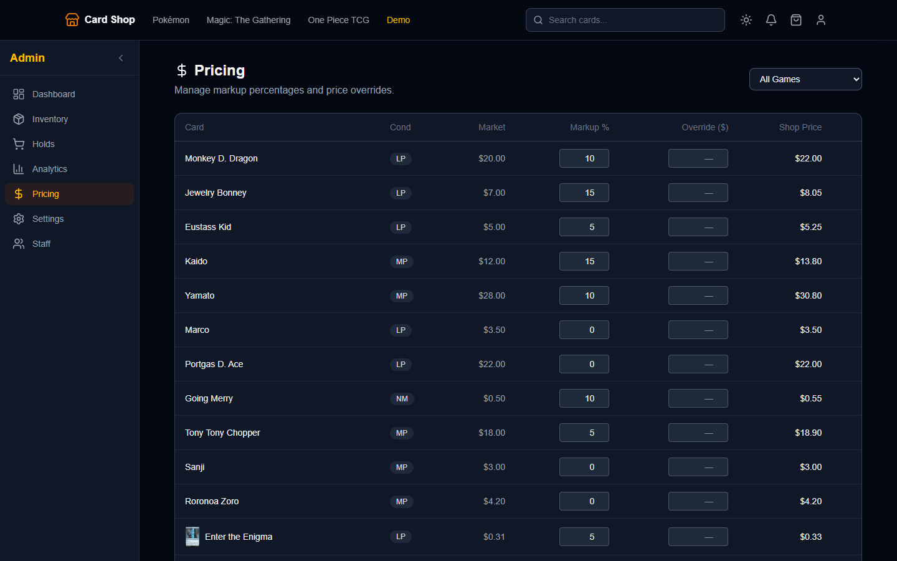
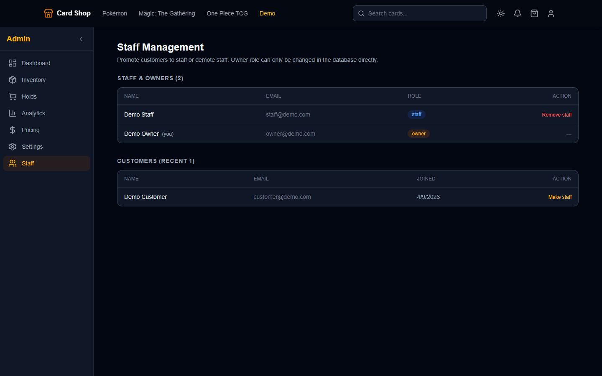

Card Shop is a full-stack inventory and reservation demo for local trading card stores. Customers can see what is actually in stock before visiting, and staff can manage cards, holds, pricing, and team access from one product surface.
Supported games: Pokemon, MTG, One Piece
Seeded inventory units for demo QA
Demo roles: customer, staff, owner
Monthly infrastructure target

The problem
Physical card shops often have the inventory customers want, but discovery still happens through binders, bulk boxes, and staff memory. That creates a bad loop: customers spend time digging, tournament tables get crowded, and comparison shopping shifts attention to online marketplaces.
The product opportunity was to make the local shop feel as searchable as an online store while still protecting the in-person pickup model that drives visits, conversations, and repeat business.
Customer flow
The customer side is built around a simple promise: find the card, reserve it, pick it up. No payment flow, no shipping flow, no account required for a basic hold.



Staff and owner tools
The admin side had to feel practical for a small shop owner, not like a generic ecommerce back office. The core workflows are inventory maintenance, reservation management, pricing control, and role-based access.






What I built
A production-shaped demo on free-tier services: public browsing, card detail pages, a reservation cart, customer wishlist, staff inventory management, holds dashboard, pricing controls, analytics scaffolding, and owner-only staff management.
- Browse and filter by game, set, rarity, condition, and price context.
- Reserve cards for in-store pickup with a 48-hour hold window.
- Customer accounts with wishlist and restock notification controls.
- Inventory tools for external API lookup, CSV import, quick entry, and manual One Piece entries.
- Owner controls for pricing, role management, analytics, and store settings.
Tech stack
Constraint: the full demo needed to run on free tiers so it would be credible for the kind of local business it is pitched to.
How holds work
The risky part of the product is inventory integrity. If two people reserve the same last copy at the same time, only one should win. I used a Supabase RPC so checking stock, creating the hold, and decrementing inventory happen as one database operation.
Role model
The demo includes three seeded accounts because the product has three audiences. Customers manage wishlist and reservations. Staff manage inventory and holds. Owners get the higher-risk controls: pricing, settings, analytics, and staff access.
That separation is enforced with Supabase Auth, route protection, and row-level security policies instead of just hiding links in the interface.
Deliberate constraints
No Stripe. No shipping. No marketplace checkout. That was intentional: the business goal is to help local shops capture online intent and turn it into an in-store visit.
Phone-based card scanning is also out of scope for this build. It is a strong future concept, but it would be a separate computer-vision and mobile workflow. This version proves the inventory, hold, and owner-ops foundation first.
Outcome
The project became a pitchable small-business product demo: realistic seeded data, three demo roles, public browsing, authenticated customer features, staff operations, owner controls, and a live walkthrough page.
It is the kind of portfolio piece I want in front of recruiters and local business owners because it shows both sides of the work: a polished customer experience and the operational system behind it.